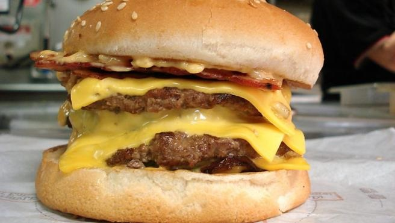

La hamburguesa es uno de los platos mas socorridos, ya que son faciles de hacer y que gusta a todo el mundo, sobre todo, a los mas pequeños. Ademas, es un plato que se puede adaptar a todas las preferencias y con muchas posibilidades a la hora de elegir los ingredientes.
Leer más
La cadena de alimentación McDonald's ha lanzado en 60 restaurantes del Reino Unido un nuevo producto: la triple cheeseburger. Si las ventas de este producto funcionan, McDonald's extenderia su distribucion por el resto del restaurante de la cadena en Gran Bretaña.
Leer Mas
La pizza es uno de esos bocados a los que pocos se resisten. Si bien es cierto que la pilña es el unico ingrediente que puede lograr que un autentico amante de este manjar se niegue a darle un bocado, tambien lo es que, quien sabe apreciarlo bien, no se conforma con disfrutarlo prefabricado
Leer Mas
Dependiendo del tipo de corteza, la cantidad de queso y los ingredientes utilizados, la pizza puede clasificar en cualquier lugar desde nutricionalmente decente a desastre de la dieta
Leer Mas
¿quien no ha tenido un dia en el que parece que todo va mal? A veces hay que darse un tiempo para ver las cosas desde otra perspectiva o simplemente pedir una pizza para levantar el animo
Leer Mas
Matthew 'Megasapo' Stonie devoró 62 perros calientes en 10 minutos durante el concurso internacional de comer hot dogs de Nathan's Famous este sabado en Nueva York y arrebató el cinturon amarillo mostaza y el titulo al campeon, quien comio 60.
Leer Mas